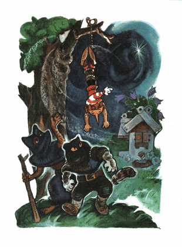

Saking kelelahan Buratino nyaris tak sanggup menggerakan kedua kakinya, bagai lalat kering di ambang jendela.
Tiba-tiba, melalui cabang pohon kenari, dia melihat sebuah lapangan rumput indah, yang di tengah-tengahnya; kecil-mungil; rumah empat jendela diterangi cahaya rembulan. Di setiap muka jendela terlukis matahari, bulan, dan bintang-bintang. Di sekitarnya bermekaran bunga-bunga biru besar.
Jalan menuju rumah kecil itu bertabur pasir putih. Di tengah-tengah fontana, terpancar air memipih seperti payung; di atasnya ada sebuah bola bergaris menari-nari.
Buratino dengan ke-empat telapaknya merangkak naik ke atas teras. Mengetuk-ngetuk pintu.
Suasana di dalam rumah itu sangat hening. Dia mengetuk lebih keras; pasti semuanya sudah terlelap
Pada saat itu, lagi-lagi dua perampok tadi melompat-lompat keluar dari hutan. Mereka mengarungi danau, arus air membawa mereka mengalir. Melihat Buratino, perampok yang pendek mendesis keji seperti kucing, dan yang tinggi menyalak-nyalak seperti rubah.
Buratino menggedor-gedor pintu dengan tangan-tangan dan kaki-kakinya:
- Tolong, tolonglah, orang baik!..
Kemudian dari jendela muncul seorang gadis cantik berambut keriting berhidung imut mancung ke atas. Kedua matanya masih terpejam

- Gadis, tolong buka pintunya, aku dikejar-kejar perampok!
- Ah, ada-ada saja! /kata gadis itu, bibirnya manisnya menguap/ Saya mau tidur, saya tidak sanggup membuka mata...
Ia merentangkan tangannya, menggeliat ngantuk lalu menghilang dari jendela.
Buratino dengan putus asa menjatuhkan batang hidungnya ke pasir dan berpura-pura mati.
Perampok-perampok itu melompat.
- Aha! Sekarang kau takkan pergi dari kami!..
Sulit dibayangkan, hal apa saja yang mungkin akan mereka lakukan, untuk memaksa Buratino buka mulut. Kalaulah selama pengejaran tadi pisau dan pistol mereka tidak terjatuh; Mungkin sampai di sini kisah Buratino berakhir dengan malang.
Akhirnya rampok-rampok itu memutuskan untuk menggantung dia terbalik, diikatlah dua kaki dia dengan tambang, dan si Buratino pun digantung di atas dahan pohon ek... Mereka duduk di bawah pohon ek, memeras ekor mereka yang basah, dan menunggu, sampai tiba saatnya kepingan emas itu rontok dari mulutnya.
Tiba dini hari, angin bertiup kencang, mendesirkan daun-daun pohon ek. Buratino terayun-ayun, bagaikan sebatang kayu. Perampok-perampok itu sudah bosan duduk di ekor yang basah.
- Bergelantunglah, sobat, sampai nanti malam /kata mereka mengancam lalu pergi mencari kedai di pinggir jalan/